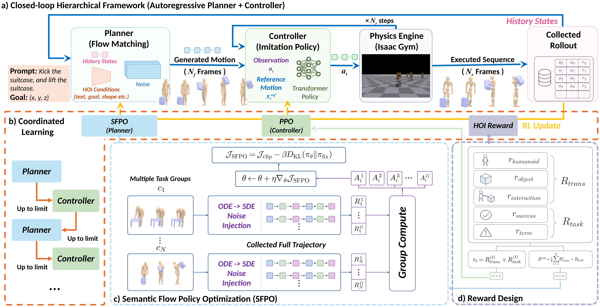

InfCoiL: Coordinated Planner-Controller Learning for Closed-Loop Physics-Based Human-Object Interaction
1Shanghai Jiao Tong University 2Shanghai Artificial Intelligence Laboratory
Selected qualitative clips with the S=2 planner and C45k controller. Distances denote pelvis displacement; recordings stop at stable goal arrival and use 5-frame display smoothing. Goal rings turn from red to green on arrival, with a brief ring pulse after stable arrival. Inspect raw trajectories in the 3D viewer.
Recording & stopping protocol
These clips are qualitative examples separate from the paper’s Table 1 benchmark (table transport covers 3.7 m pelvis displacement in 10.8 s; tripod transport covers 3.2 m in 7.2 s). Recording stops once pelvis and object goal errors both stay below 0.3 m and object speed remains below 0.2 m/s for 10 consecutive frames. Five-frame display smoothing is applied for presentation only; raw pelvis and object translations are preserved in the 3D viewer. The rendered videos hold the final recorded pose for an additional 1.5 s to emphasize the goal rings. No policy inference runs in the browser.
Method Overview
InfCoiL connects a morphology-aware flow-matching planner with a unified physics-based controller. Given text and spatial goals, the planner generates short interaction trajectories; the controller executes them, and the next plan is conditioned on the realized physical state. Semantic Flow Policy Optimization (SFPO) fine-tunes the planner using selected stochastic denoising transitions, channel-wise semantic covariance, and group-relative rewards from complete closed-loop executions. Alternating controller and planner updates (C→P→C) adapts both components using physical rollout feedback. This combines generative interaction planning with a controller trained across humanoid morphologies.

Quantitative Evaluation (Table 1)
Evaluation on the re-split OMOMO test set. Each sequence is evaluated three times and metrics are averaged. Arrows indicate whether higher (↑) or lower (↓) values are better; bold numbers mark the best result in each column.
| Method | SR@0.3 (%) ↑ | Humanoid Tracking (cm) ↓ | Object Tracking (cm) ↓ | Pelvis Goal (cm) ↓ | Object Goal (cm) ↓ |
|---|---|---|---|---|---|
| InterMimic student (open-loop) | 24.62 | 9.23 | 16.89 | 90.39 | 111.89 |
| SimGenHOI* (open-loop + SFT) | 52.14 | 9.69 | 18.00 | 50.12 | 68.15 |
| InfCoiL open-loop | 49.23 | 9.40 | 18.08 | 57.15 | 75.51 |
| Closed-loop, no fine-tuning | 56.09 | 7.25 | 16.10 | 46.89 | 69.83 |
| Planner-only fine-tuning | 56.98 | 7.75 | 16.36 | 47.02 | 70.60 |
| Controller-only fine-tuning | 73.37 | 8.44 | 14.67 | 35.72 | 49.45 |
| InfCoiL C→P | 77.24 | 8.90 | 14.76 | 32.90 | 45.37 |
| InfCoiL C→P→C | 81.19 | 8.87 | 14.21 | 31.31 | 41.51 |
*SimGenHOI is our open-loop baseline with SFT cascade controller training. In the ablation rows, Controller-only fine-tuning trains the controller for 10k iterations (73.37% SR@0.3), whereas InfCoiL C→P→C uses 10k controller iterations, 500 planner iterations, and 4k further controller iterations (81.19% SR@0.3). A reference run with 14k controller iterations and no planner updates reaches 71.99% SR@0.3; the coordinated schedule additionally includes 500 planner iterations.
Additional Qualitative Comparisons & Rollouts
Baseline comparison on Monitor (InfCoiL vs. SFT cascade / InterMimic student)
Earlier qualitative monitor rollouts synchronized by elapsed seconds (0.00 s to 13.30 s). These historical recordings are separate from the final C→P→C benchmark. They use different random seeds across methods and differ in duration: the baseline clips end at 2.83 s (SFT cascade) and 3.00 s (InterMimic student) and hold their final frame while InfCoiL completes the transport.
Open-loop SFT cascade rollout ends at 2.83 s (85 frames at 30 fps) in this recorded example.
Additional object rollouts (Monitor, Floor lamp, Wood chair)
Earlier qualitative InfCoiL rollouts across three household objects: monitor (13.3 s), floor lamp (6.7 s), and wood chair (12.8 s). Best trajectories per object can also be inspected in the 3D viewer.
BibTeX
@misc{zou2026infcoil,
title = {InfCoiL: Coordinated Planner-Controller Learning for Closed-Loop Physics-Based Human-Object Interaction},
author = {Zou, Yude and Yao, Yifei and Hao, Yiwei and Wang, Hanqing and Gao, Xing},
year = {2026}
}